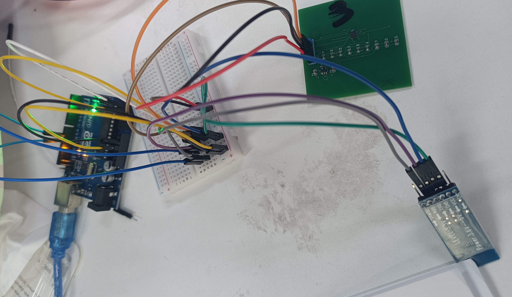
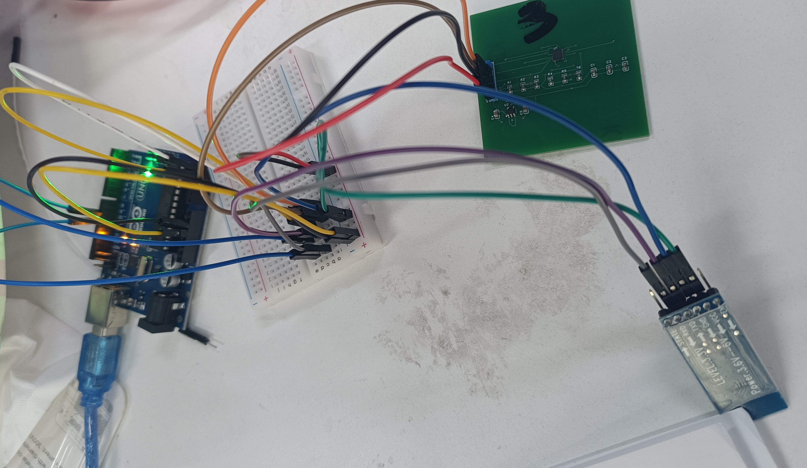
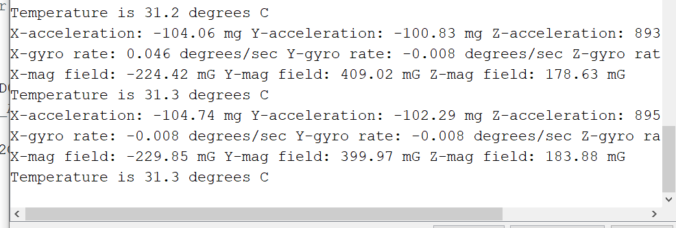

Arduino读取MPU-9250数据
Arduino与MPU-9250通过IIC实现数据传输并尝试使用蓝牙传输数据
在淘宝商家找的成品并仿照设计了外围电路和PCB板子，师兄焊了三个板子，好在有一个能用（可以看出芯片真的非常小，确实不好焊）
 

参照网上的这篇文章[(17条消息) MPU9250+Arduino/读取传感器数据，跑了他的代码，幸运的可以跑通。这个教程和另外一篇csdn上的文案一模一样，我都不知道谁抄谁的，难绷。
接下来的工作是搞懂代码，修改输出的数据形式，并用蓝牙传输。